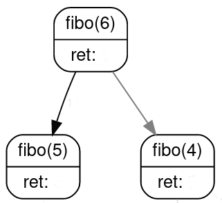

T2.2 Récursivité⚓︎
Voir ici
Dans le même état d'esprit, chez Google:

2.2.1 Principe⚓︎
En règle générale, un objet est dit récursif s'il se définit à partir de lui-même. On trouve donc des acronymes récursifs, comme GNU dans GNU/Linux (GNU is Not Unix), le logiciel d'émulation WINE (Wine Is Not an Emulator), les cartes bancaire VISA (Visa International Service Association), le moteur de recherche Bing (Bing is not Google), etc.
Mais aussi des images illustrant la mise en abîme:
{kind=link}
En informatique, on parle de programme récursif ou plutôt de fonction récursive:
Définition
Une fonction récursive est une fonction qui s'appelle elle-même dans sa propre définition.
Un programme est récursif lorsqu'il fait intervenir une fonction récursive (ou plusieurs).
2.2.2 Premiers exemples et précautions d'usage⚓︎
No infinite recursion !
Voici trois premiers exemples de fonctions récursives. Dans chaque cas, repérer l'appel récursif à la fonction.
Une seule de ces 3 fonctions est correcte, laquelle?
1 2 3 4 | |
1 2 3 4 5 6 | |
1 2 3 4 5 6 | |
Cas de base
Lorsqu'on écrit une fonction récursive, le piège classique est de créer une boucle infinie.
Hormis les blaques de geeks d'initiés, la récursivité en informatique ne tolère pas l'auto-référence infinie: il faut prévoir une condition d'arrêt qui traite le cas de base !!!
{kind=link}
Terminaison
Pour s'assurer qu'une fonction récursive se termine, il faut absolument que la chaîne d'appel conduise au cas de base.
- si le paramètre de la fonction est un entier, alors l'appel doit se faire avec un entier strictement inférieur;
- si le paramètre de la fonction est une liste, alors l'appel doit se faire avec une liste de longueur strictement inférieure;
- etc.
Exemples à connaître
On souhaite calculer la somme suivante: \(S = 0 + 1 + 2 + 3 + \dots + (n-1) + n\)
En première, on a vu comment construire une fonction itérative le permettant, à l'aide d'une boucle for (d'où le terme itératif) et d'une variable accumulatrice:
1 2 3 4 5 | |
Une autre façon de voir le problème, c'est de se dire que cette somme peut s'écrire \(S = n + (n-1) + \dots + 3 + 2 + 1 + 0\) et que c'est la somme de \(n\) et de la somme des \(n-1\) premiers entiers : \(S = n + \underbrace{(n-1) + \dots + 3 + 2 + 1 + 0}_{\text{somme des entiers jusqu'à } n-1}\).
On écrit alors de façon «assez naturelle» la fonction récursive suivante:
1 2 3 4 5 | |
En mathématiques, la factorielle d'un nombre entier \(n\), notée \(n!\), est le produit de tous les entiers positifs non nuls inférieurs ou égaux à \(n\).
Autrement dit, \(n! = 1 \times 2 \times 3 \times \dots \times (n-1) \times n = n \times (n-1) \times \dots \times 3 \times 2 \times 1\).
Exercice 1
S'inspirer des fonctions somme précédentes pour écrire deux fonctions facto_iter (itérative) et facto_rec (récursive) renvoyant la factorielle d'un nombre entier n strictement positif.
2.2.3 Mécanisme⚓︎
Maintenant qu'on a vu le principe d'une fonction récursive, il faut comprendre comment se passent les appels successifs à la fonction, pour un paramètre différent.
Reprenons l'exemple de la fonction récursive somme. Si on appelle cette fonction:
>>> somme(5)
5 ne correspond pas au cas de base, la fonction va faire appel à somme(4). Il faut retenir que l'exécution de la fonction somme est interrompue (avec l'argument 5) pour rappeler la fonction somme (avec l'argument 4)...
Pour gérer ces différents appels, le système utilise une pile d'exécution:
On parle de pile, car les exécutions successives «s'empilent» les unes sur les autres. Lorsque le cas de base est atteint, on «dépile» les instructions.
D'où l'importance de l'existence du cas de base, et de s'assurer qu'il sera bien atteint...
Limitation de la taille de la pile
Dans l'exemple précédent, la pile a une profondeur de 6. La profondeur de la pile n'est pas illimitée:
1 2 3 4 5 6 7 8 9 10 11 12 13 | |
De manière générale, les programmes récursifs sont souvent proches de la définition du problème à résoudre et assez naturels à écrire, mais ils sont susceptibles de générer un trop grand nombre d'appels à eux-mêmes et de nécessiter un temps d'exécution trop grand ou un débordement de pile. Il est parfois possible de les optimiser, comme nous le verrons dans le cours concernant la programmation dynamique.
2.2.4 Exercices⚓︎
Exercice 2
Écrire une fonction somme_tab qui prend en paramètre:
- un tableau d'entiers
tab - un indice
i
et qui renvoie la somme des éléments du tableau à partir de l'indice donné.
Conseil: Bien réfléchir au cas d'arrêt et à l'appel récursif avant de se lancer dans l'écriture de la fonction...
Exercice 3
Écrire une fonction récursive puissance(x, n) qui renvoie le nombre \(x^n\).
Exercice 4
- Écrire une fonction récursive
nb_chiffres(n)qui renvoie le nombre de chiffres du nombre entiern(penser à la division euclidienne par 10). - Écrire une fonction récursive
nb_bits(n)qui renvoie le nombre de bits dans l'écriture binaire du nombre entiern(penser à la division euclidienne par 2).
Exercice 5
Le plus grand diviseur commun de deux nombres entiers \(a\) et \(b\), noté \(\text{pgcd}(a, b)\), vérifie les propriétés suivantes:
- \(\text{pgcd}(a, 0) = a\)
- \(\text{pgcd}(a, b) = \text{pgcd}(b, c)\) où \(c\) est le reste dans la division euclidienne de \(a\) par \(b\).
Écrire une fonction récursive qui calcule le pgcd de deux nombres entiers.
Exercice 6
La multiplication égyptienne, dite aussi du paysan russe, était utilisée par les scribes dès l'Antiquité. Elle ne nécessite pas de connaître les tables de multiplication (sic), seulement la division par deux et l'addition.
Principe pour multiplier \(a\) par \(b\):
- on divise \(a\) par 2 tant qu'on peut en doublant \(b\);
- sinon on décrémente \(a\) et on ajoute \(b\) au résultat.
Écrire une fonction récursive qui multiplie deux entiers donnés en paramètre par cette méthode.
- Effectuer à la main des multiplications égyptiennes.
- Bien réfléchir au cas de base.
Exercice 7 : récursivité double
En mathématiques, la suite de Fibonacci est définie ainsi:
- \(F_0=1\) et \(F_1=1\)
- pour tout entier \(n \geqslant 2\): \(F_{n+2} = F_{n+1} + F_n\).
On a donc par exemple \(F_2 = 1+1=2\), \(F_3=2+1=3\), \(F_4=3+2=5\), etc.
- Implémenter une fonction récursive
fiboqui calcule les termes de la suite de Fibonacci. - Dessiner sous forme d'un arbre les appels de
fibo(6). Début de l'arbre: 
{kind=link}
Exercice 8 : récursivité croisée
L'objectif est d'écrire deux fonctions est_pair et est_impair qui testent la parité d'un nombre entier.
Seules opérations autorisées : test de nullité et soustraire 1.
Exercice 9: les tours de Hanoï
Le problème des tours de Hanoï, inventé par le mathématicien Édouard Lucas en 1889, consiste à déplacer des disques de diamètres différents d'une tour de départ à une tour d'arrivée, en passant par une tour intermédiaire.
On ne peut déplacer qu'un disque à la fois, et on ne peut pas placer un disque sur un plus petit que lui.
Le but est bien entendu de minimiser le nombre de déplacements.

- Essayer de trouver une stratégie optimale en s'entraînant par exemple ici
-
Observer les étapes-clés suivantes:
-
Écrire une fonction récursive
hanoi(n, depart, arrivee, inter)affichant les déplacements successifs (par ex.1 -> 3) pour déplacerndisques de la tourdepartvers la tourarriveeen passant par la tour intermédiaireinter.
{kind=link}
{kind=link}
{kind=link}
{kind=link}
Exercice 10: rendu de monnaie, le retour
Écrire une fonction récursive nb_pieces(pieces, somme) où pieces est une liste de valeurs de pieces (triée dans l'ordre décroissant) et somme un entier donnant la somme à atteindre, et qui renvoie le nombre de pièces minimal.
Pour cela, on envisagera la stratégie suivante:
- en notant
hle premier élément de la liste ettla liste complète privée du premier élément, la liste de pièces est[h] + t. - on se retrouve face à deux options: soit on prend
het il reste à faire la sommesomme - havec la liste complète, soit on ne prend pashet il reste à faire la sommesommeavec la listet - on choisit le minimum renvoyé par ces deux options...
- Envisager le cas où la somme est négative ou qu'il n'y a pas de pièces à prendre.
- Pour obtenir un nombre arbitrairement grand, on peut utiliser
math.infdu modulemath. - Slicing (hors-programme): pour obtenir une liste privée de son premier élément, on écrit
liste[1:].
Exercice 11: le sac à dos, le retour
En analysant le problème de façon similaire à l'exercice précédent, compléter la fonction récursive suivante:
1 2 3 4 5 6 7 8 9 10 11 12 13 14 15 16 17 18 19 | |
Exercice 12
En classe de première, on a vu un programme itératif implémentant l'algorithme de recherche dichotomique.
Il s'agit de faire une recherche d'une valeur dans une liste triée en «coupant» la liste en deux à chaque comparaison de la valeur cherchée avec la valeur centrale de la liste. Pour rappel, voir ici.
Écrire une fonction recherche_dichotomie qui prend en paramètre une liste d'entiers tab (triée par ordre croissant) et une valeur n et qui renvoie un booléen indiquant la présence ou non de la valeur n dans la liste tab.
Exceptionnellement, le slicing est autorisé:
tab[i:]renvoie la liste des élèments detabde l'indicei(inclus) jusqu'à la fin de la liste ;tab[:i]renvoie la liste des élèments detabde l'indice 0 à l'indicei(exclus).
Exercice 13
Les coefficients binomiaux se calculent aisément à l'aide du triangle de pascal qui permet de les représenter:
| p=0 | p=1 | p=2 | p=3 | p=4 | p=5 | |
|---|---|---|---|---|---|---|
| n=0 | 1 | |||||
| n=1 | 1 | 1 | ||||
| n=2 | 1 | 2 | 1 | |||
| n=3 | 1 | 3 | 3 | 1 | ||
| n=4 | 1 | 4 | 6 | 4 | 1 | |
| n=5 | 1 | 5 | 10 | 10 | 5 | 1 |
Le mode de calcul du coefficient \(C(n, p)\) est le suivant:
- \(C(n,0)=1\) et \(C(n,n)=1\)
- Dans les autres cas (\(0 < p < n\)), on a \(C(n,p)=C(n-1,p-1)+C(n-1,p)\).
Écrire une fonction récursive C(n, p) qui prend deux entiers en paramètres et renvoie le coefficient binomial correspondant.
Exercice 14: le flocon de Koch
Le flocon de Koch est une figure fractale obtenue par itérations successives d'une même transformation sur chacun de ses segments.
La transformation est la suivante: chaque segment de longueur l donne naissance à 4 segments de longueur l/3, en construisant une pointe de triangle équilatéral sur le deuxième tiers du segment.
{kind=link}
Animation des premières étapes:

- Écrire une fonction récursive
segmentqui prend un entiernet un entierlet qui trace le segment de longueurlcorrespondant à l'étapen. - Écrire une fonction
floconqui trace le flocon entier (mêmes paramètres).
- Le tracé ne se fait qu'à l'étape 0;
- l'étape
nfait 4 appels récursifs à l'étapen-1.
Commencer par importer le module turtle et régler la vitesse de tracé au maximum (et cahcer la souris):
1 2 3 4 | |
On aura besoin des fonctions suivantes:
turtle.forward(n): trace un segment de longueurn;turtle.left(a): tourner d'un angle deadegrés vers la gauche;turtle.right(a): tourner d'un angle deadegrés vers la droite.
Ajouter éventuellement l'instruction en fin de programme (pour éviter les soucis de fermeture de fenêtre):
1 | |